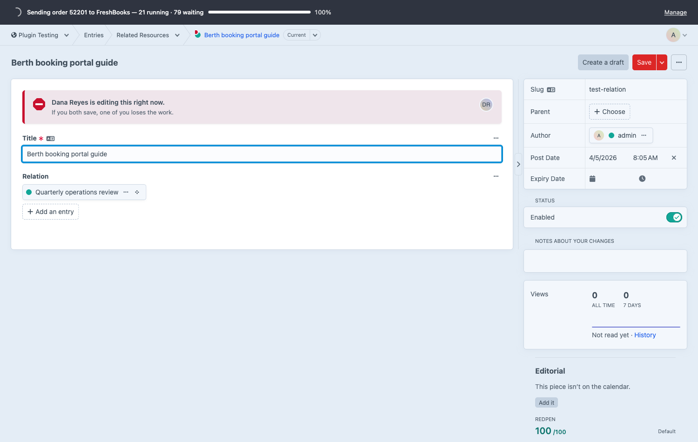
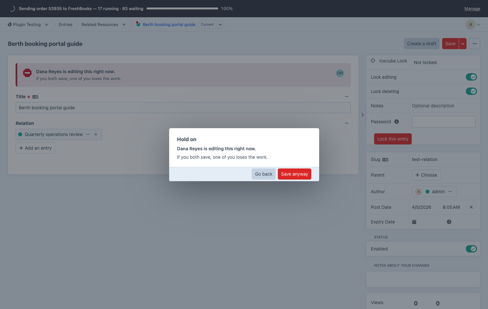
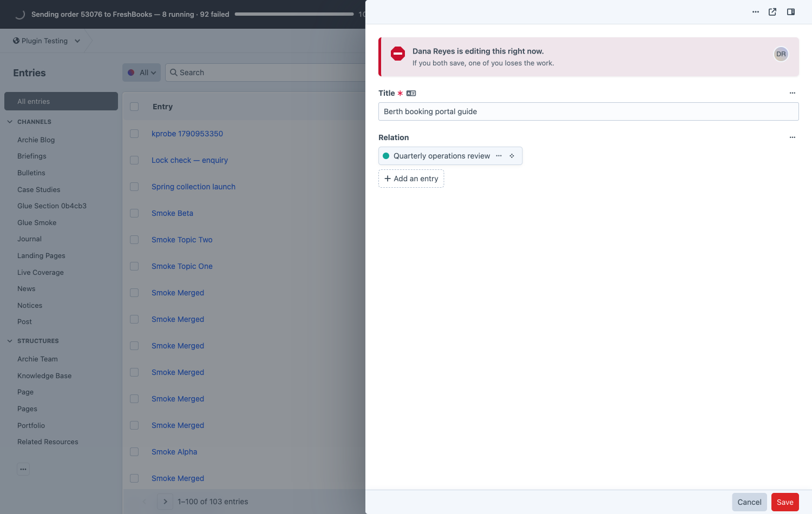
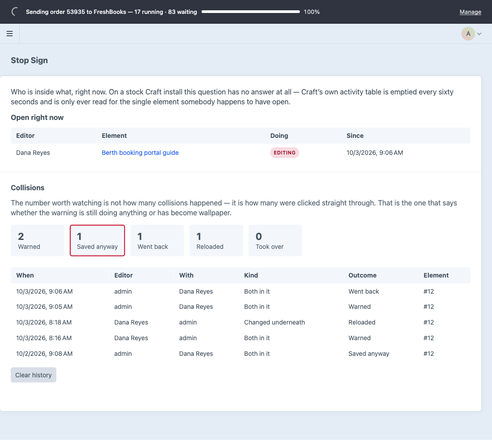

Two people in one entry.
Somebody gets asked before they save.
Core tracks who is in an entry and shows a 26px avatar. Stop Sign covers the five gaps it leaves open.
| Craft on its own | With Stop Sign | |
|---|---|---|
| Someone else is here | An avatar in the corner | A banner that names them and says whether they have typed |
| You click Save | It saves | A question first, asked again at the moment of saving |
| In a slideout | No conflict signal at all | The same banner and the same guard |
| Your own second tab | Invisible | Warned, like anybody else |
| Last week's collision | Deleted after sixty seconds | A history, with what each person chose |
A banner at the top of the form that names who else is in the entry, and whether they have started typing.

Craft puts nothing between the save button and the save. Stop Sign asks, and asks with up-to-date information.

Craft's reload prompt only appears on the full-page editor, and it never counts your own tabs.

Turn it on per section. The second editor opens read-only, because Craft's own permission check says so.
Who is in what right now, and every collision with what the person chose. "Saved anyway" is the number to watch.
